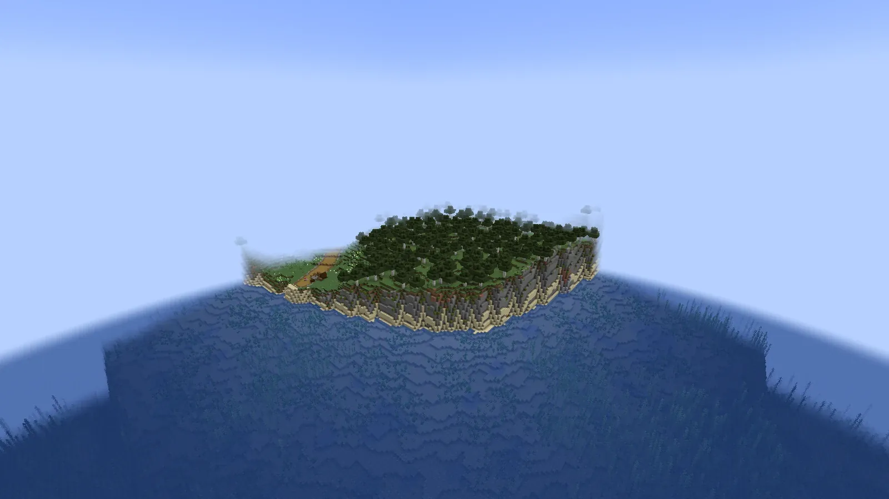
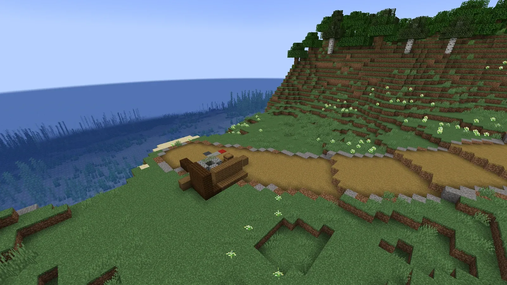

天と淵のあいだ
はじめる
入れ方、最初の一時間、キー、困ったときの手引き。
INSTALL
入れ方
| もの | 中身 |
|---|---|
| Minecraft | Java 版 1.21.1 |
| 導入先 | NeoForge 1.21.1（21.1.259 で確かめています） |
| 必要な mod | GeckoLib（NeoForge 1.21.1 用。4.9.3 で確かめています） |
| Java | 21 |
| この mod | skyabyss-1.1.1.jar |
- Minecraft Java 版 1.21.1 に、NeoForge のインストーラーで NeoForge を入れます。
skyabyss-1.1.1.jarと GeckoLib の jar を、どちらもmodsフォルダに入れます。- 新しい世界を作り、世界の種類を「天と淵の大陸」にします。難易度はピースフル以外に。
公開のリリース（ダウンロードの置き場）はまだありません。今は jar を開発者から受け取るか、ソースから ./gradlew build で作ります（build/libs/ に出ます）。
サーバーで遊ぶとき: サーバーの mods にも同じ jar を入れ、server.properties に level-type=skyabyss\:continent を書いてから世界を作ります。みんなで同じ版を使います。
FIRST HOUR
最初の一時間
画面の左上の「目的の帯」に、いま向かうところが一行で出ます。迷ったらまずそれを見てください。

はじまりの島
- 野営地で、職を一つ選びます。始めの武器と最初の技がもらえます。
- 野営地の帳面を拾います。伝承の書の最初の頁になります。
- 道の脇の窪地で、古い巨大な足跡を見ます。
- 峠の野盗を三人退けます。
- 旅の休み場の焚き火で休み、宿り木の祠に祈ります（ここで目覚めるようになります）。
- 船着き場の渡し守と話すと、鐘の都へ渡してくれます。
鐘の都から
- 初めて都に入ると、灯りの道が鍛冶場・宿・道具屋・組合を案内します。
- 都から土の道で、四つの土地の町へ。地図は M。
- 章は土地の町が入口です。メインの目的は U のクエストログで見られます。
KEYS
キー
キーは、設定の「操作」の「天と淵のあいだ」の項目で変えられます。ほかの mod とぶつかったら、ここで直してください。
| キー | 働き |
|---|---|
| U | クエストログ（メインとサブ、追跡の切り替え） |
| M | 旅の地図 |
| K / J | 技の画面 / ステータス |
| R G V Z | 技の枠 1〜4 |
| B | 控え帳（巨神の進み・大事な品の在りかと呼び戻し） |
| L | 記し（この mod の進捗） |
| N | 知らせの記録（流れた語りを読み返す） |
| O | パーティ |
| I / Y（長押し） | 旅嚢を開く / 旅嚢の道具を使う |
| H | 護符を使う |
| 左 Alt（長押し） | 輪の選び画面（クエスト・旅嚢・技・地図などを選んで開く） |
| ; | 道しるべ（地面の道）の切り替え |
| ' | 「ここ」を仲間に知らせる |
| F5 / F6 | 肩越しの視点 / 左右の肩を替える |
| [ | 武器の点検 |
誰でも使えるコマンド
| コマンド | 中身 |
|---|---|
/skyabyss help | 遊ぶ人が使えるコマンドの一覧 |
/growth・/skill | レベル・力・技の一覧 |
/skyrecord | 控え帳を開く |
/skyabyss_codex | 図鑑（敵・装備） |
/party | パーティ（invite・accept・leave など） |
/guild・/trade | ギルド・取引所 |
TROUBLE
困ったとき
大事な品をなくした
天の鍵の欠片・心核・呼び笛などの大事な品は、倒れても手もとに残ります。人に渡したり、箱にしまって忘れたりしたときは、B の控え帳で在りかを見て「呼び戻す」を押します。
地上で倒れた（墓）
巨神の背の外で倒れると、身につけた防具・左手・装飾品・ホットバー・大事な品は持ったまま起き上がります。残りの持ち物と経験値は、倒れた場所のそばの苔むした積み石の「墓」に入ります。墓の場所は控え帳で分かります。
試練で詰まった
休み場の焚き火にしゃがんで右クリックすると、試練をあきらめて背の入口へ戻れます。地上へ戻るには、岩鯨は錨石、潮殻は潮門、雷翼は羽根の門、余燼は口の前の見送りの石を使います。
次の巨神が見つからない
U のクエストログに手がかりがあります。語り部とイサナは、話を聞くたびに少しずつ教えてくれます。
FAQ
よくある質問
建築や採掘はできますか
できません。この mod は Minecraft の見た目をした RPG で、アドベンチャーモードで遊びます。採集は道具ごとの決まった場所だけです。
ふつうの世界（バニラの地形）でも遊べますか
遊べません。世界の種類は「天と淵の大陸」だけです。
一人でも最後まで遊べますか
遊べます。巨神の背の試練も一人で挑めます。仲間がいると、人数に合わせて敵が強くなります。
ほかの mod と一緒に使えますか
JEI・Sodium・Jade・Shoulder Surfing Reloaded と一緒に起動できることを確かめています。この mod は作業台を使わないので、JEI にはレシピが出ません。
前の版の世界を続けられますか
続けられます。版が上がると、世界と人のデータの直しが自動で流れます。
KNOWN ISSUES
既知の問題
- 月・雲海・塔・深み・地下のダンジョンの主の強さは、遊んだ声で合わせていきます。
- 日替わり・週替わり（言伝ての板・店の品揃え・組合の頼み・塔・釣り大会など）は、実時間の朝 5 時・月曜で替わります。ゲームの中で寝ても替わりません。
- 世界を開いた直後の数分は、裏で巨神の背の島を建てているので、動きが少し重いことがあります。
- 知らせの記録（N）は、その遊びのあいだだけの記録です。
- 不具合や気づいたことは、GitHub の Issues で知らせてください。